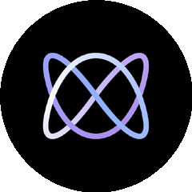
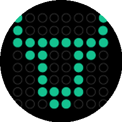
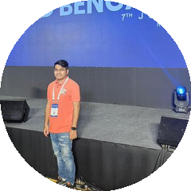

8月9日 GitHub 日榜
200000
颗星
一个人整理
#01
AI编程技能包
AI编程技能包
mattpocock / skills

给 AI agent 的现成工程技能 · 来自作者本人 .agents 目录
AI编程
Shell
技能包
MIT
现成工程技能
个人经验开源
一个人 .agents 目录 半年二十万星
#02
独立网页浏览器
独立浏览器
LadybirdBrowser / ladybird

真正独立的浏览器 · 从零 C++ 手写引擎 不靠任何大厂
独立内核
C++手写
不靠大厂
BSD
不靠大厂内核
C++手写引擎
浏览器不只 Chrome 从零写引擎
#03
金融多智能体
AI组团交易
TauricResearch / TradingAgents

AI 组团做金融交易 · 分析师 交易员 风控分工
多智能体
金融交易
Python
Apache
AI分工投研
团队搬进代码
AI 不单干 组团做金融决策
#04
运维面试指南
面试题兵器谱
litu54 / DevOps-Interview-Guide

DevOps 面试指南 · fork 比 star 还多的活教材
DevOps
面试题
活教材
刷题
活教材改造
运维求职兵器谱
fork 比 star 多 被当活教材 fork 走
这四个你最想体验哪个
关注 GitHub 星探 · 每日热门项目
下期见